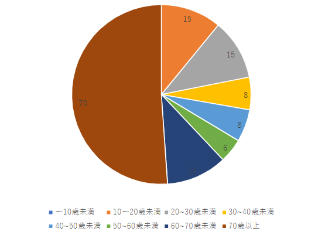

＜記録結果＞
定点観察

＜種類＞
キャップ・・・７４人
バケットハット・・・４６人
ベレー帽・・・１６人
ニット帽・・・４人
サンバイザー・・・２人

＜色＞
黒・・・３９人/白・・・２３人
茶・・・２２人/灰・・・１５人
青・・・１１人/紺・・・１１人
緑・・・６人/ピンク・・・３人
赤・・・２人/紫・・・１人
黄緑・・・１人

＜年齢層＞
～１０歳未満・・・０人
１０～２０歳未満・・・１５人
２０～３０歳未満・・・１５人
３０～４０歳未満・・・８人
４０～５０歳未満・・・８人
５０～６０歳未満・・・６人
６０～７０歳未満・・・１５人
７０歳以上・・・７０人
移動観察

＜種類＞
キャップ・・・４７人
バケットハット・・・１４人
ベレー帽・・・９人
ニット帽・・・２人

＜色＞
黒・・・３７人
白・・・１０人
茶・・・１５人
灰・・・９人
緑・・・１人

＜年齢層＞
～１０歳未満・・・４人
１０～２０歳未満・・・５人
２０～３０歳未満・・・１３人
３０～４０歳未満・・・１２人
４０～５０歳未満・・・５人
５０～６０歳未満・・・１４人
６０～７０歳未満・・・５人
７０歳以上・・・６人
＜考察＞
- 若い年代よりも年配の人に人気がある。 時間帯も関係していると思うが、若者よりも年配の人が多く帽子をかぶっていた。
- バケットハットは女性に人気。 今回の観察では、年配の女性が多かった。
- 帽子の色は季節の影響を受ける。 どの年代も黒色と白色の帽子が多かった。どの服装にも合わせやすいので、多いのは納得だった。
晴れていたので熱中症対策をしている人が多かったのだと思う。
キャップよりは顔周りに日陰を作るので、日焼け対策だかぶっている人が多かったのではないかと思った。
茶色は黒色などと比べてどの服装にも合うというわけではないと思う。
秋は紅葉や落ち葉から茶色のイメージもあるので、季節の影響で茶色の帽子が多くなったのではよ思った。
＜感想＞
天気によっては帽子をかぶる人が少なくなってしまうと考えていたので、晴れてよかった。多くの人が帽子をかぶっていて、人気のアイテムなんだと思った。
日光から頭を守るだけでなく、季節によって色を変えることでファッションとして楽しんでいる人も多いと思った。
一人一人の特徴をまとめるのはとても難しいと思った。
どのような特徴で見るのかを決めていたので、表などを作って観察すればもっと正確なでーたがとれたと思う。
また、かぶっていない人の人数もカウントすることで考察の幅が増えたのではないかと思った。